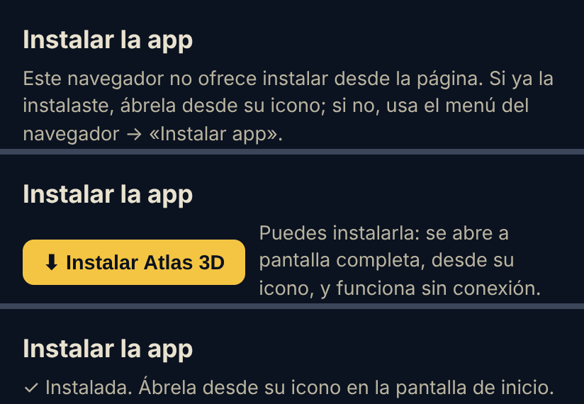
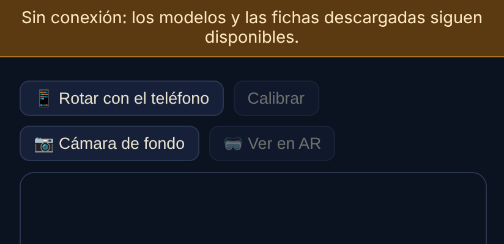

Hasta hoy el Atlas 3D ya era instalable (tiene manifest y Service Worker desde las sesiones 27 y 34), pero solo escuchaba un evento, appinstalled, que llega cuando ya se instaló. No había nada que invitara a instalar. Chrome, por su cuenta, muestra una barrita o un ítem de menú; sirve, pero no tiene tu estilo, aparece cuando él quiere, y en la app no hay forma de saber si se ofreció.
Objetivos de aprendizaje
- ✓Explicar quién decide qué en la instalación de una PWA: el navegador decide cuándo es instalable y la página decide cómo se ofrece.
- ✓Guardar el evento
beforeinstallprompty usarlo en un botón propio, una sola vez y dentro de un clic. - ✓Distinguir los estados de instalación (instalada, recién instalada, instalable, iOS, no disponible) y dar a cada uno el texto adecuado, incluido el plan B manual de iOS.
- ✓Mostrar el estado de la conexión con
onlineyoffline, sabiendo qué garantizanavigator.onLiney qué no. - ✓Probar el flujo con un evento simulado, comprobar que la prueba sí falla cuando el código se rompe, y reconocer qué solo se comprueba en un teléfono.
- ✓Corregir con datos un defecto visual encontrado en un teléfono real: rótulos que se pisan en el modelo de Microservicios.
Recursos de esta sesión
- Descargar .zipCheckpoint — cierre de la Sesión 40. El Atlas 3D con los tres modelos de arquitectura, las fichas, la AR con ◀ ▶ y la salida de AR defensiva. Es el punto de partida de hoy.
- Descargar .zipVersión terminada de esta sesión. Agrega
src/instalar.ts,src/conexion.ts, la zona «Instalar la app» y la banda de conexión, y corrige los rótulos demicroservicios.ts.
1Instalar es una conversación entre el navegador y tu página
El reparto de papeles es este: el navegador decide cuándo una página es instalable. Según la documentación de web.dev, para Chrome eso exige, entre otras cosas, que la app no esté ya instalada, que se sirva por HTTPS, que el usuario haya interactuado con la página (al menos un toque) y la haya visto un rato (al menos 30 segundos), y un manifest con nombre, iconos de 192 y 512 píxeles, start_url y un display como standalone. Cuando todo se cumple, Chrome dispara en la página el evento beforeinstallprompt. La página decide cómo ofrecerlo: puede guardar ese evento y mostrarlo más tarde, en un botón propio.
public/manifest.json
{
"name": "Atlas 3D de Arquitectura de Software",
"short_name": "Atlas 3D",
"description": "Catálogo interactivo en 3D de patrones y arquitecturas de software, con soporte de realidad aumentada.",
"start_url": "./",
"scope": "./",
"display": "standalone",
"background_color": "#0b1220",
"theme_color": "#0b1220",
"icons": [
{ "src": "iconos/icon-192.png", "sizes": "192x192", "type": "image/png" },
{ "src": "iconos/icon-512.png", "sizes": "512x512", "type": "image/png" },
{ "src": "iconos/icon-512-maskable.png", "sizes": "512x512", "type": "image/png", "purpose": "maskable" }
]
}Dos consecuencias prácticas. Primero, el botón no puede aparecer «al abrir la página» a la fuerza: depende de que Chrome ya haya disparado el evento (por eso en la prueba del teléfono hay que tocar la página y esperar). Segundo, el evento no existe en todos los navegadores: Safari en iPhone no lo dispara, y ahí la instalación es un gesto manual del usuario.
2Guardar el evento y usarlo una sola vez
El módulo nuevo src/instalar.ts empieza declarando el tipo del evento. TypeScript no lo trae (no es un estándar cerrado), así que se declara solo lo que se usa: un prompt() que abre el diálogo del sistema y una promesa userChoice que dice qué respondió la persona.
src/instalar.ts (el tipo del evento)
interface EventoInstalacion extends Event {
prompt(): Promise<void>;
userChoice: Promise<{ outcome: "accepted" | "dismissed"; platform: string }>;
}Luego se escucha el evento. Hay un detalle que decide todo: e.preventDefault(). Sin él, Chrome móvil muestra su barra de instalación y tu botón compite con ella; con él, el navegador te cede la decisión de cuándo mostrar la invitación. El evento se guarda en una variable del módulo.
src/instalar.ts (escuchar los eventos)
export function iniciarInstalacion(alCambiar: () => void): void {
avisar = alCambiar;
window.addEventListener("beforeinstallprompt", (e) => {
// Sin esto, Chrome móvil muestra su propia barrita de «Instalar». Se guarda para usarlo en NUESTRO botón.
e.preventDefault();
evento = e as EventoInstalacion;
rechazada = false;
avisar();
});
window.addEventListener("appinstalled", () => {
evento = null; // ya no sirve
recienInstalada = true;
avisar();
});
// Cambiar entre pestaña del navegador y ventana de app también cambia el modo de visualización.
window.matchMedia("(display-mode: standalone)").addEventListener("change", () => avisar());
avisar();
}Y se usa dentro de pedirInstalacion(), que el botón llama en un clic. Dos reglas del navegador mandan aquí: prompt() solo funciona dentro de un gesto del usuario (si no, lanza un error), y un evento solo sirve una vez. Por eso el código lo suelta (evento = null) antes de esperar la respuesta: si la persona cancela, el botón ya no tiene qué usar, y debe esperar a que Chrome dispare un evento nuevo.
src/instalar.ts (usar el evento)
export async function pedirInstalacion(): Promise<"accepted" | "dismissed" | "no-disponible"> {
if (!evento) return "no-disponible";
const guardado = evento;
evento = null; // un evento solo se puede usar una vez: se suelta antes de esperar la respuesta
await guardado.prompt();
const { outcome } = await guardado.userChoice;
rechazada = outcome === "dismissed";
avisar();
return outcome;
}3Cinco estados, cinco textos
Un botón que a veces está y a veces no se vuelve confuso si no se explica. Por eso estadoInstalacion() reduce todo a cinco estados y la interfaz tiene un texto para cada uno:
| Estado | Cómo se sabe | Qué muestra la página |
|---|---|---|
| instalada | La página corre como app: display-mode: standalone (Android y escritorio) o navigator.standalone (iOS). | «✓ Estás usando Atlas 3D como app instalada.» Sin botón. |
| recién instalada | Llegó appinstalled en esta visita; la pestaña sigue abierta. | «✓ Instalada. Ábrela desde su icono…» Sin botón. |
| instalable | Hay un evento guardado. | El botón «⬇ Instalar Atlas 3D» y qué se gana al instalar. |
| iOS | El agente de usuario es de iPhone o iPad (o un «Mac» con pantalla táctil: así se presenta el iPad reciente). | Los pasos manuales: Compartir → «Añadir a pantalla de inicio». Sin botón. |
| no disponible | Ninguno de los anteriores. | Un texto que manda al menú del navegador («Instalar app»), o, si el usuario canceló, que Chrome decidirá cuándo volver a ofrecerla. |
src/instalar.ts (cómo se sabe si ya está instalada)
export function estaInstalada(): boolean {
// Android/escritorio: el modo de visualización del manifest. iOS: la propiedad no estándar «standalone».
return window.matchMedia("(display-mode: standalone)").matches || (navigator as Navigator & { standalone?: boolean }).standalone === true;
}src/instalar.ts (el estado)
export function estadoInstalacion(): EstadoInstalacion {
if (estaInstalada()) return "instalada";
if (recienInstalada) return "recien-instalada";
if (evento) return "instalable";
if (esIOS()) return "ios";
return "no-disponible";
}Ya instalada y con evento: ni se ofrece ni se pinta como instalable. El orden de las preguntas importa:
estaInstalada() va primero. Si se preguntara antes por el evento, una app abierta desde su icono podría invitarte a instalar lo que ya instalaste. La prueba E de la sección 6 fija ese orden.4El botón y su texto
En index.html la zona es mínima: un título, un botón que empieza oculto y un texto con role="status" para que los lectores de pantalla anuncien los cambios.
index.html (la zona de instalación)
<section class="instalar-zona" aria-labelledby="titulo-instalar">
<h2 id="titulo-instalar">Instalar la app</h2>
<div class="instalar-barra">
<button type="button" id="btn-instalar" hidden>⬇ Instalar Atlas 3D</button>
<span id="estado-instalacion" class="estado-instalacion" role="status"></span>
</div>
</section>Y en main.ts, una sola función, pintarInstalacion(), decide qué se ve según el estado. Se llama al arrancar y cada vez que algo cambia (llega el evento, se instala, se cambia entre pestaña y ventana de app). El clic del botón solo pide la instalación; no pinta nada por su cuenta: el resultado entra por el mismo camino que cualquier otro cambio de estado.
src/main.ts (pintar el estado)
function pintarInstalacion(): void {
const estado = estadoInstalacion();
btnInstalar.hidden = estado !== "instalable";
estadoInstalacionEl.textContent =
estado === "instalada" ? TEXTO_INSTALACION.instalada
: estado === "recien-instalada" ? TEXTO_INSTALACION.recienInstalada
: estado === "instalable" ? TEXTO_INSTALACION.instalable
: estado === "ios" ? TEXTO_INSTALACION.ios
: instalacionRechazada() ? TEXTO_INSTALACION.rechazada
: TEXTO_INSTALACION.noDisponible;
}src/main.ts (el clic del botón)
btnInstalar.addEventListener("click", async () => {
btnInstalar.disabled = true;
try {
await pedirInstalacion(); // el resultado lo pinta pintarInstalacion() vía iniciarInstalacion
} finally {
btnInstalar.disabled = false;
}
});
iniciarInstalacion(pintarInstalacion);
La zona «Instalar la app» en un lienzo de 412 px de ancho, en tres momentos: sin evento, con el evento guardado (aparece el botón) y tras
appinstalled. En esta captura el evento es simulado (sección 6).5Saber si hay conexión, sin prometer de más
El Atlas ya funcionaba sin conexión, pero nada se lo decía a la persona. Si las fichas no se actualizan o el botón de descargar tarda, ¿es la app o es la red? El módulo src/conexion.ts escucha los eventos online y offline de window:
src/conexion.ts
export function iniciarConexion(alCambiar: (enLinea: boolean) => void): () => void {
const alSubir = () => alCambiar(true);
const alBajar = () => alCambiar(false);
window.addEventListener("online", alSubir);
window.addEventListener("offline", alBajar);
alCambiar(navigator.onLine);
return () => {
window.removeEventListener("online", alSubir);
window.removeEventListener("offline", alBajar);
};
}navigator.onLine miente en una dirección. Un false es fiable: el dispositivo no tiene red. Un true solo dice que hay alguna red (un wifi sin salida a Internet también da true). Por eso el aviso solo habla cuando el navegador afirma «sin conexión», y el mensaje de vuelta dice «Volvió la conexión», no «el servidor responde». Para una garantía real habría que intentar una petición y ver si llega (es la actividad 2).En main.ts la banda tiene tres comportamientos: se queda mientras no hay red, avisa tres segundos cuando vuelve y luego se esconde. El texto de «sin conexión» dice qué sigue funcionando, no solo qué se perdió.
src/main.ts (la banda de conexión)
let estuvoSinConexion = false;
let temporizadorConexion: number | undefined;
iniciarConexion((enLinea) => {
window.clearTimeout(temporizadorConexion);
if (!enLinea) {
estuvoSinConexion = true;
estadoConexionEl.hidden = false;
estadoConexionEl.textContent = "Sin conexión: los modelos y las fichas descargadas siguen disponibles.";
} else if (estuvoSinConexion) {
estuvoSinConexion = false;
estadoConexionEl.hidden = false;
estadoConexionEl.textContent = "Volvió la conexión.";
temporizadorConexion = window.setTimeout(() => { estadoConexionEl.hidden = true; }, 3000);
} else {
estadoConexionEl.hidden = true;
}
});
La banda de «sin conexión», pegada arriba (
position: sticky) para que se vea aunque la página esté desplazada.6Probar: un evento simulado, una prueba que falla a propósito
Salida literal de la compilación:
$ npm run build
> pwa-ar-objetos3d@0.0.0 build
> tsc && tsc -p tsconfig.sw.json && vite build
vite v5.4.21 building for production...
transforming...
✓ 27 modules transformed.
rendering chunks...
computing gzip size...
dist/index.html 3.99 kB │ gzip: 1.40 kB
dist/assets/index-B68nsmLq.css 6.29 kB │ gzip: 1.78 kB
dist/assets/workbox-window.prod.es5-BqEJf4Xk.js 5.71 kB │ gzip: 2.34 kB
dist/assets/index-RQVUra6j.js 544.86 kB │ gzip: 141.78 kB
(!) Some chunks are larger than 500 kB after minification. Consider:
- Using dynamic import() to code-split the application
- Use build.rollupOptions.output.manualChunks to improve chunking: https://rollupjs.org/configuration-options/#output-manualchunks
- Adjust chunk size limit for this warning via build.chunkSizeWarningLimit.
✓ built in 3.29s
PWA v1.3.0
Building src/sw.ts service worker ("es" format)...
vite v5.4.21 building for production...
transforming...
✓ 89 modules transformed.
rendering chunks...
computing gzip size...
dist/sw.mjs 27.66 kB │ gzip: 9.16 kB
✓ built in 531ms
PWA v1.3.0
mode injectManifest
format: es
precache 8 entries (557.95 KiB)
files generated
dist/sw.js
> pwa-ar-objetos3d@0.0.0 build
> tsc && tsc -p tsconfig.sw.json && vite build
vite v5.4.21 building for production...
transforming...
✓ 27 modules transformed.
rendering chunks...
computing gzip size...
dist/index.html 3.99 kB │ gzip: 1.40 kB
dist/assets/index-B68nsmLq.css 6.29 kB │ gzip: 1.78 kB
dist/assets/workbox-window.prod.es5-BqEJf4Xk.js 5.71 kB │ gzip: 2.34 kB
dist/assets/index-RQVUra6j.js 544.86 kB │ gzip: 141.78 kB
(!) Some chunks are larger than 500 kB after minification. Consider:
- Using dynamic import() to code-split the application
- Use build.rollupOptions.output.manualChunks to improve chunking: https://rollupjs.org/configuration-options/#output-manualchunks
- Adjust chunk size limit for this warning via build.chunkSizeWarningLimit.
✓ built in 3.29s
PWA v1.3.0
Building src/sw.ts service worker ("es" format)...
vite v5.4.21 building for production...
transforming...
✓ 89 modules transformed.
rendering chunks...
computing gzip size...
dist/sw.mjs 27.66 kB │ gzip: 9.16 kB
✓ built in 531ms
PWA v1.3.0
mode injectManifest
format: es
precache 8 entries (557.95 KiB)
files generated
dist/sw.js
El precaché pasó de 554,43 KiB (Sesión 40) a 557,95 KiB y sigue en 8 entradas; el paquete principal, de 542,45 a 544,86 kB; el Service Worker no cambió (27,66 kB).
Chromium, el navegador de las pruebas, no dispara beforeinstallprompt por sí mismo. Lo que sí se puede hacer es simular el evento: crear uno con el mismo nombre y los mismos dos miembros que usa la página (prompt() y userChoice) y lanzarlo. Eso prueba la lógica de la página; el evento real de Chrome se prueba en el teléfono.
test_s41.js (el evento simulado)
const EVENTO = (resultado) => `
window.__prompts = 0;
window.__simular = (resultado) => {
const e = new Event('beforeinstallprompt', { cancelable: true });
e.prompt = async () => { window.__prompts++; };
e.userChoice = Promise.resolve({ outcome: resultado, platform: 'web' });
window.dispatchEvent(e);
return e.defaultPrevented;
};`;Los escenarios: A sin evento (sin botón, con el texto del menú); B llega el evento (se llama a preventDefault y aparece el botón); C el clic llama a prompt() una vez, el botón se oculta y appinstalled confirma; D el usuario cancela y, cuando Chrome vuelve a ofrecer, el botón reaparece; E modo standalone (se suplanta matchMedia): aunque llegue el evento, no se ofrece; F iPhone (se cambia el agente de usuario): pasos manuales; G la conexión, cortando y devolviendo la red con context.setOffline, y comprobando que el visor sigue funcionando sin red.
$ node test_s41.js
A1) sin evento → botón visible: false | texto: Este navegador no ofrece instalar desde la página. Si ya la instalaste, ábrela desde su icono; si no, usa el menú del navegador → «Instalar app».
B1) llega beforeinstallprompt → defaultPrevented: true | botón visible: true | texto: Puedes instalarla: se abre a pantalla completa, desde su icono, y funciona sin conexión.
C1) clic en «Instalar» → prompt() llamado 1 vez | botón visible: false
C2) llega appinstalled → texto: ✓ Instalada. Ábrela desde su icono en la pantalla de inicio.
D1) usuario cancela → botón visible: false | texto: Cancelaste la instalación. Chrome decide cuándo volver a ofrecerla; mientras tanto, usa el menú ⋮ → «Instalar app».
D2) Chrome vuelve a ofrecer la instalación → botón visible: true
E1) modo standalone → botón visible: false | texto: ✓ Estás usando Atlas 3D como app instalada.
F1) iPhone → botón visible: false | texto: En iPhone y iPad no hay botón: en Safari toca Compartir y luego «Añadir a pantalla de inicio».
G1) en línea → banda: null
G2) se corta la red → banda: Sin conexión: los modelos y las fichas descargadas siguen disponibles.
G3) sin red se cambia de modelo → «Niveles apilados: cada capa solo habla con la inme…»
G4) vuelve la red → banda: Volvió la conexión.
G5) 3,3 s después → banda: null
pageerrors: []
RESULTADO: todo en orden
A1) sin evento → botón visible: false | texto: Este navegador no ofrece instalar desde la página. Si ya la instalaste, ábrela desde su icono; si no, usa el menú del navegador → «Instalar app».
B1) llega beforeinstallprompt → defaultPrevented: true | botón visible: true | texto: Puedes instalarla: se abre a pantalla completa, desde su icono, y funciona sin conexión.
C1) clic en «Instalar» → prompt() llamado 1 vez | botón visible: false
C2) llega appinstalled → texto: ✓ Instalada. Ábrela desde su icono en la pantalla de inicio.
D1) usuario cancela → botón visible: false | texto: Cancelaste la instalación. Chrome decide cuándo volver a ofrecerla; mientras tanto, usa el menú ⋮ → «Instalar app».
D2) Chrome vuelve a ofrecer la instalación → botón visible: true
E1) modo standalone → botón visible: false | texto: ✓ Estás usando Atlas 3D como app instalada.
F1) iPhone → botón visible: false | texto: En iPhone y iPad no hay botón: en Safari toca Compartir y luego «Añadir a pantalla de inicio».
G1) en línea → banda: null
G2) se corta la red → banda: Sin conexión: los modelos y las fichas descargadas siguen disponibles.
G3) sin red se cambia de modelo → «Niveles apilados: cada capa solo habla con la inme…»
G4) vuelve la red → banda: Volvió la conexión.
G5) 3,3 s después → banda: null
pageerrors: []
RESULTADO: todo en orden
Qué demuestra: (A) sin evento no hay botón y el texto manda al menú; (B)
defaultPrevented: true y el botón aparece; (C) prompt() se llamó exactamente una vez y el botón no sobrevive al uso del evento; (D) cancelar deja el texto de «Cancelaste…» y un evento nuevo recupera el botón; (E) instalada, sin botón; (F) iPhone, con los pasos de Compartir; (G) «Sin conexión» al cortar, el visor sigue cambiando de modelo, «Volvió la conexión» al devolver y la banda desaparece sola a los 3 segundos.¿Y si la prueba estuviera mintiendo? En la Sesión 40 un resultado verde resultó vacío. Esta vez se hizo lo contrario: romper el código a propósito y ver que la prueba lo nota. Se comentó la línea e.preventDefault() de instalar.ts, se recompiló y se corrió la prueba:
$ sed -i 's|^ e.preventDefault();| // e.preventDefault();|' src/instalar.ts
$ npm run build
$ node test_s41.js | grep -E "B1|FALL|RESULTADO"
B1) llega beforeinstallprompt → defaultPrevented: false | botón visible: true | texto: Puedes instalarla: se abre a pantalla completa, desde su icono, y funciona sin conexión.
✗ FALLÓ: debe llamar a preventDefault
RESULTADO: hay 1 fallos
$ npm run build
$ node test_s41.js | grep -E "B1|FALL|RESULTADO"
B1) llega beforeinstallprompt → defaultPrevented: false | botón visible: true | texto: Puedes instalarla: se abre a pantalla completa, desde su icono, y funciona sin conexión.
✗ FALLÓ: debe llamar a preventDefault
RESULTADO: hay 1 fallos
Una prueba que nunca ha fallado no ha demostrado nada. Con la línea comentada, el escenario B falla con su mensaje (
defaultPrevented: false) y el resultado final lo dice. Después se restauró la línea y se volvió a compilar: la salida de arriba es la de la versión restaurada.Las pruebas de las sesiones 39 y 40 se repitieron sobre el código nuevo. La de la 39 completa; de la 40, sus últimas líneas (el resto es la misma salida de la sesión anterior):
$ S39DIR=s41 node test_s39.js
A1) petición → {"requiredFeatures":["local","hit-test"],"optionalFeatures":["dom-overlay","anchors"],"domOverlay":{"root":{}}}
A1) estado general → Sesión de realidad aumentada activa. El navegador no concedió: dom-overlay.
A2) mirando al suelo → Toca la pantalla para colocar el modelo. | {hitTest:sí,anclas:sí,anclado:no,fase:listo,escala:0.25,giro:0,pos:—}
A3) tras tocar → Modelo colocado. Toca otro punto para recolocarlo. | {hitTest:sí,anclas:sí,anclado:sí,fase:colocado,escala:0.25,giro:0,pos:[0,-1.4,-2.34]} | anclas creadas/borradas: {"crearAncla":1,"borrarAncla":0}
A4) el usuario camina 1 m a la derecha → pos del cubo: [0,-1.4,-2.34] (sigue en su sitio: true )
B1) movimiento de 4 px (menor que el umbral) → pos igual: true
B2) arrastrar 200 px a la derecha → pos: [0,-1.4,-2.34] → [0.63,-1.4,-2.34] | x aumentó: true | y igual: true
B3) «select» justo después de un arrastre → NO recoloca: anclas {"crearAncla":1,"borrarAncla":0} → {"crearAncla":1,"borrarAncla":0} | pos: [0.63,-1.4,-2.34]
B4) separar los dos dedos (200 → 400 px) → escala: 0.25 → 0.5
B5) separarlos mucho más → escala limitada a 1
B6) juntarlos casi del todo → escala limitada a 0.1
B7) girar los dos dedos → giro: 0° → 90°
B8) tras dos dedos, ¿hubo «gesto»? el siguiente «select» tampoco recoloca: {"crearAncla":1,"borrarAncla":0} → {"crearAncla":1,"borrarAncla":0}
C1) recolocar mirando más abajo → pos: [0.63,-0.8,-2.34] → [0,-0.8,-1.27] | anclas creadas/borradas: {"crearAncla":2,"borrarAncla":1} | anclado: sí | escala conservada: 1
D1) mirando al techo → Modelo colocado. Toca otro punto para recolocarlo. | fase: colocado | tocar: anclas {"crearAncla":2,"borrarAncla":1} → {"crearAncla":2,"borrarAncla":1} | el cubo no se movió: true
D2) vuelve a mirar al suelo → colocado
E1) tras salir → La sesión de realidad aumentada terminó. | anclas borradas en total: {"crearAncla":2,"borrarAncla":2} | canvas: 1 | botón AR: true
F1) arranca mirando al techo → Mueve el teléfono despacio hasta ver el anillo verde sobre una superficie. | {hitTest:sí,anclas:sí,anclado:no,fase:buscando,escala:0.25,giro:0,pos:—}
F2) tocar sin superficie → fase: buscando | anclas: {"crearAncla":0,"borrarAncla":0}
F3) 6 s sin superficie → No encuentro superficies. Prueba con una zona con textura y buena luz, o toca la pantalla para colocar el modelo delante de ti. | {hitTest:sí,anclas:sí,anclado:no,fase:buscando,escala:0.25,giro:0,pos:—}
F4) tocar tras el plazo → coloca delante de la mirada: {hitTest:sí,anclas:sí,anclado:no,fase:colocado,escala:0.25,giro:0,pos:[0,-0.31,-1.49]} | anclas: {"crearAncla":0,"borrarAncla":0}
G1) sin hit-test → Sesión de realidad aumentada activa. El navegador no concedió: dom-overlay, hit-test.
G1) Este dispositivo no ofrece hit-test: el modelo está a 1,5 m delante. Toca para traerlo delante de ti. | {hitTest:no,anclas:sí,anclado:no,fase:colocado,escala:0.25,giro:0,pos:[0,-0.3,-1.5]}
G2) tras tocar (de pie en x=1, mirando al frente) → {hitTest:no,anclas:sí,anclado:no,fase:colocado,escala:0.25,giro:0,pos:[1,-0.3,-1.48]}
G3) los gestos también funcionan sin hit-test → escala: 0.5
H1) sin «anchors» → Sesión de realidad aumentada activa. El navegador no concedió: dom-overlay, anchors.
H2) tocar → {hitTest:sí,anclas:no,anclado:no,fase:colocado,escala:0.25,giro:0,pos:[0,-1.4,-2.34]} | anclas creadas: {"crearAncla":0,"borrarAncla":0}
I1) createAnchor rechazado → {hitTest:sí,anclas:sí,anclado:no,fase:colocado,escala:0.25,giro:0,pos:[0,-1.4,-2.34]}
J1) intentos de petición → ["[\"local\",\"hit-test\"]","[\"local\"]"] | estado: Sesión de realidad aumentada activa. El navegador no concedió: dom-overlay.
J2) tocar tras el reintento → {hitTest:sí,anclas:sí,anclado:sí,fase:colocado,escala:0.25,giro:0,pos:[0,-1.4,-2.34]}
pageerrors: []
A1) petición → {"requiredFeatures":["local","hit-test"],"optionalFeatures":["dom-overlay","anchors"],"domOverlay":{"root":{}}}
A1) estado general → Sesión de realidad aumentada activa. El navegador no concedió: dom-overlay.
A2) mirando al suelo → Toca la pantalla para colocar el modelo. | {hitTest:sí,anclas:sí,anclado:no,fase:listo,escala:0.25,giro:0,pos:—}
A3) tras tocar → Modelo colocado. Toca otro punto para recolocarlo. | {hitTest:sí,anclas:sí,anclado:sí,fase:colocado,escala:0.25,giro:0,pos:[0,-1.4,-2.34]} | anclas creadas/borradas: {"crearAncla":1,"borrarAncla":0}
A4) el usuario camina 1 m a la derecha → pos del cubo: [0,-1.4,-2.34] (sigue en su sitio: true )
B1) movimiento de 4 px (menor que el umbral) → pos igual: true
B2) arrastrar 200 px a la derecha → pos: [0,-1.4,-2.34] → [0.63,-1.4,-2.34] | x aumentó: true | y igual: true
B3) «select» justo después de un arrastre → NO recoloca: anclas {"crearAncla":1,"borrarAncla":0} → {"crearAncla":1,"borrarAncla":0} | pos: [0.63,-1.4,-2.34]
B4) separar los dos dedos (200 → 400 px) → escala: 0.25 → 0.5
B5) separarlos mucho más → escala limitada a 1
B6) juntarlos casi del todo → escala limitada a 0.1
B7) girar los dos dedos → giro: 0° → 90°
B8) tras dos dedos, ¿hubo «gesto»? el siguiente «select» tampoco recoloca: {"crearAncla":1,"borrarAncla":0} → {"crearAncla":1,"borrarAncla":0}
C1) recolocar mirando más abajo → pos: [0.63,-0.8,-2.34] → [0,-0.8,-1.27] | anclas creadas/borradas: {"crearAncla":2,"borrarAncla":1} | anclado: sí | escala conservada: 1
D1) mirando al techo → Modelo colocado. Toca otro punto para recolocarlo. | fase: colocado | tocar: anclas {"crearAncla":2,"borrarAncla":1} → {"crearAncla":2,"borrarAncla":1} | el cubo no se movió: true
D2) vuelve a mirar al suelo → colocado
E1) tras salir → La sesión de realidad aumentada terminó. | anclas borradas en total: {"crearAncla":2,"borrarAncla":2} | canvas: 1 | botón AR: true
F1) arranca mirando al techo → Mueve el teléfono despacio hasta ver el anillo verde sobre una superficie. | {hitTest:sí,anclas:sí,anclado:no,fase:buscando,escala:0.25,giro:0,pos:—}
F2) tocar sin superficie → fase: buscando | anclas: {"crearAncla":0,"borrarAncla":0}
F3) 6 s sin superficie → No encuentro superficies. Prueba con una zona con textura y buena luz, o toca la pantalla para colocar el modelo delante de ti. | {hitTest:sí,anclas:sí,anclado:no,fase:buscando,escala:0.25,giro:0,pos:—}
F4) tocar tras el plazo → coloca delante de la mirada: {hitTest:sí,anclas:sí,anclado:no,fase:colocado,escala:0.25,giro:0,pos:[0,-0.31,-1.49]} | anclas: {"crearAncla":0,"borrarAncla":0}
G1) sin hit-test → Sesión de realidad aumentada activa. El navegador no concedió: dom-overlay, hit-test.
G1) Este dispositivo no ofrece hit-test: el modelo está a 1,5 m delante. Toca para traerlo delante de ti. | {hitTest:no,anclas:sí,anclado:no,fase:colocado,escala:0.25,giro:0,pos:[0,-0.3,-1.5]}
G2) tras tocar (de pie en x=1, mirando al frente) → {hitTest:no,anclas:sí,anclado:no,fase:colocado,escala:0.25,giro:0,pos:[1,-0.3,-1.48]}
G3) los gestos también funcionan sin hit-test → escala: 0.5
H1) sin «anchors» → Sesión de realidad aumentada activa. El navegador no concedió: dom-overlay, anchors.
H2) tocar → {hitTest:sí,anclas:no,anclado:no,fase:colocado,escala:0.25,giro:0,pos:[0,-1.4,-2.34]} | anclas creadas: {"crearAncla":0,"borrarAncla":0}
I1) createAnchor rechazado → {hitTest:sí,anclas:sí,anclado:no,fase:colocado,escala:0.25,giro:0,pos:[0,-1.4,-2.34]}
J1) intentos de petición → ["[\"local\",\"hit-test\"]","[\"local\"]"] | estado: Sesión de realidad aumentada activa. El navegador no concedió: dom-overlay.
J2) tocar tras el reintento → {hitTest:sí,anclas:sí,anclado:sí,fase:colocado,escala:0.25,giro:0,pos:[0,-1.4,-2.34]}
pageerrors: []
$ S40DIR=s41 node test_s40.js | tail -8
I1) base v2 preparada con identificadores de la demo
I2) tras abrir la app → {"version":3,"progreso":[["microservicios",false,333],["mvc",true,111]],"descargas":[["capas","pendiente"],["mvc","pendiente"]]}
J1) antes de usar AR → rastro: null
J2) dentro de AR → rastro: activa | diagnóstico: Última sesión de AR: sin registro.
J3) tras salir → rastro: fin-ok
J4) diagnóstico → Última sesión de AR: terminó completa (hace 1 s).
J5) rastro interrumpido simulado, tras recargar → Última sesión de AR: se interrumpió en el paso «fin-3-ancla» (hace 5 s). | panel abierto: true
pageerrors: []
I1) base v2 preparada con identificadores de la demo
I2) tras abrir la app → {"version":3,"progreso":[["microservicios",false,333],["mvc",true,111]],"descargas":[["capas","pendiente"],["mvc","pendiente"]]}
J1) antes de usar AR → rastro: null
J2) dentro de AR → rastro: activa | diagnóstico: Última sesión de AR: sin registro.
J3) tras salir → rastro: fin-ok
J4) diagnóstico → Última sesión de AR: terminó completa (hace 1 s).
J5) rastro interrumpido simulado, tras recargar → Última sesión de AR: se interrumpió en el paso «fin-3-ancla» (hace 5 s). | panel abierto: true
pageerrors: []
Y la publicación en subruta, que sigue sin rutas absolutas:
$ npm run build -- --base=/atlas-3d/ --outDir /tmp/dist-sub
$ node test_subruta.js
subruta → {"scope":"http://localhost:4195/atlas-3d/","activo":true,"manifest":{"start":"./","scope":"./"},"iconoStatus":200,"caches":["modelos-3d","workbox-precache-v2-http://localhost:4195/atlas-3d/"]}
recarga sin conexión: canvas montado = 1
ficha → ["http://localhost:4195/atlas-3d/modelos/mvc.json",200]
descarga desde el botón → caché modelos-3d: ["http://localhost:4195/atlas-3d/modelos/capas.json","http://localhost:4195/atlas-3d/modelos/microservicios.json","http://localhost:4195/atlas-3d/modelos/mvc.json"]
peticiones fuera de la subruta o 404: [] | pageerrors: []
$ node test_subruta.js
subruta → {"scope":"http://localhost:4195/atlas-3d/","activo":true,"manifest":{"start":"./","scope":"./"},"iconoStatus":200,"caches":["modelos-3d","workbox-precache-v2-http://localhost:4195/atlas-3d/"]}
recarga sin conexión: canvas montado = 1
ficha → ["http://localhost:4195/atlas-3d/modelos/mvc.json",200]
descarga desde el botón → caché modelos-3d: ["http://localhost:4195/atlas-3d/modelos/capas.json","http://localhost:4195/atlas-3d/modelos/microservicios.json","http://localhost:4195/atlas-3d/modelos/mvc.json"]
peticiones fuera de la subruta o 404: [] | pageerrors: []
Qué no puede comprobar la simulación. Que Chrome realmente dispare el evento en tu teléfono (depende de sus criterios y de que hayas interactuado un rato con la página), que el diálogo del sistema se vea y se comporte como esperas, que el icono quede en la pantalla de inicio y que la app abierta desde él ocupe toda la pantalla, y cómo se ve Safari en un iPhone de verdad. Todo eso se comprueba en la mano, en la sección siguiente.
7Un defecto que solo se vio en el teléfono: rótulos que se pisan
En la prueba de la sesión anterior, en un teléfono real, el rótulo «publica» del enlace Pedidos → Bus de mensajes se superponía al rótulo «Bus de mensajes» al girar el modelo, y «Cliente» quedaba cortado por el borde inferior del visor. El emulador no lo había mostrado porque probaba la lógica; esto era presentación.
Los rótulos son Sprite que siempre miran a la cámara y se dibujan por encima de todo (depthTest = false): así nunca los tapa un objeto, pero cuando dos piezas quedan casi en la misma visual, sus textos chocan. Gracias a que los modelos son datos, el arreglo es cambiar dos campos de microservicios.ts, sin tocar el constructor:
src/modelos/microservicios.ts («Cliente»)
{ id: "cliente", nombre: "Cliente", rol: "actor", forma: "esfera", pos: [0, 0, 7.6], tam: [1.2, 1.2, 1.2], rotulo: "frente", resumen: "App o navegador que hace las peticiones." },src/modelos/microservicios.ts («Bus de mensajes»)
{ id: "broker", nombre: "Bus de mensajes", rol: "infra", forma: "caja", pos: [2.2, 0, 0.8], tam: [3.2, 1.2, 1.6], rotulo: "arriba", resumen: "Reparte eventos entre servicios sin que se llamen unos a otros." },- «Bus de mensajes» pasa de
frenteaarriba: deja libre la franja por donde pasan las flechas «publica» y «entrega». - «Cliente» pasa de
abajoafrente: el rótulo ya no cuelga por debajo de la esfera, que era lo que el borde cortaba. La esfera se acercó un poco (zde 8,2 a 7,6) y la cámara se alejó (distanciade 0,8 a 0,9).

Mismo gesto de órbita en el emulador, con el código de la Sesión 40 (columna izquierda) y el de hoy (columna derecha). Arriba, vista inicial; abajo, tras girar: «publica» ya no se monta sobre «Bus de mensajes».
Esto mejora, no resuelve. En la captura de abajo a la derecha, «Bus de mensajes» queda cerca de «Pagos» y a otro ángulo volverán a rozarse otros textos. Con rótulos que siempre miran al espectador, algún ángulo tendrá choques; la solución de fondo sería decidir cuáles rótulos mostrar según el ángulo, o mostrar solo el de la pieza elegida. Es el tema de la Actividad 3.
8Pruébalo en tu teléfono
- Actualiza el repositorio. Descomprime
pwa-ar-objetos3d-sesion41.zipy copia su contenido sobre tu carpeta del proyecto, reemplazando archivos. Conserva.github/workflows/pages.yml. - Súbelo:
git add .,git commitygit push. Si el push se rechaza,git pull --no-rebase -X ours --no-edity vuelve a empujar. - Espera la marca verde en la pestaña Actions, abre la app en Chrome y recarga dos veces.
- Interactúa un rato con la página (toca los modelos, cambia de pestaña) y espera al menos medio minuto: Chrome no ofrece instalar antes.
| Qué hacer | Qué debes ver | Si no ocurre |
|---|---|---|
| Baja hasta «Instalar la app». | Cuando Chrome dispara el evento, aparece el botón amarillo «⬇ Instalar Atlas 3D» (puede tardar). | Si el texto dice que el navegador no ofrece instalar, usa el menú ⋮ → «Instalar app» y anota que el botón no apareció. |
| Toca «Instalar Atlas 3D» y acepta el diálogo. | El diálogo del sistema; luego el texto «✓ Instalada. Ábrela desde su icono…» y el icono en tu pantalla de inicio. | Si cancelas, el texto dice «Cancelaste la instalación…» y el botón desaparece. |
| Abre Atlas 3D desde su icono. | Pantalla completa, sin barra de direcciones, y en «Instalar la app»: «✓ Estás usando Atlas 3D como app instalada.» | Si ves la barra de Chrome, se abrió en una pestaña: usa el icono, no el enlace. |
| Activa el modo avión. | La banda ámbar «Sin conexión…» arriba; los modelos y las fichas descargadas siguen. | — |
| Desactiva el modo avión. | «Volvió la conexión.» y a los 3 segundos desaparece. | — |
| Abre «Microservicios» y gíralo. | «Cliente» entero, y «publica» sin pisar «Bus de mensajes». | Si aún se pisan, anota el ángulo: es dato para la Actividad 3. |
| Desde la app instalada, entra a «Ver en AR» y sal con «Salir de AR». | La sesión de AR funciona y la salida no cierra la pestaña. | Si algo falla, lee la última línea de «Diagnóstico de realidad aumentada». |
Anota sobre todo dos cosas que ningún emulador puede decirte: cuánto tardó Chrome en ofrecer la instalación y si la AR funciona igual desde la app instalada que desde la pestaña.
9Actividades
1
No insistas: recordar que dijeron «ahora no»
Hoy el botón se ve siempre que hay evento. Agreguen un botón «Ahora no» que lo esconda y recuerde la decisión (con localStorage) durante siete días, sin tocar instalar.ts. Decidan qué pasa si pasan los siete días, y si «Ahora no» debe ocultar también el texto explicativo.
Para pensar: ¿por qué un recordatorio permanente sería peor experiencia que no tener botón?
Entregable: el código y una captura de cada estado.
2
Una conexión que se comprueba de verdad
Escriban comprobarRed(): intenta una petición pequeña a un recurso que el Service Worker no tenga precacheado (por ejemplo, una ficha de /modelos/), con cache: "no-store" y un límite de tiempo, y devuelve «llega», «no llega» o «no hay red». Úsenla cuando el navegador diga online.
Para pensar: ¿por qué una petición a un archivo precacheado daría siempre «llega»?
Entregable: la función y una prueba con el servidor de pruebas caído (como en la Sesión 40).
3
Rótulos que no se pisen
Propongan dos remedios distintos para los choques de rótulos que quedan al girar el modelo (por ejemplo, quitar el rótulo de los enlaces y mostrarlo solo al elegir la pieza, o reducir el tamaño de los rótulos según la distancia). Implementen uno, y con una captura del mismo ángulo antes y después muestren que mejoró y qué costó.
Entregable: los dos remedios, cuál eligieron y por qué, y las capturas.
4
Una prueba que falle antes de pasar
Quiten la línea evento = null; de pedirInstalacion(), recompilen y ejecuten test_s41.js. Si la prueba sigue en verde, escriban el escenario que falte para que sí detecte el doble uso del evento.
Entregable: la salida antes y después, y el escenario nuevo si hizo falta.
Cierre: actualiza tu repositorio
Terminal
git add .
git commit -m "Instalación guiada, estado de conexión y rótulos de Microservicios"
git pushResumen de la sesión
- El navegador decide cuándo una PWA es instalable (y lo avisa con
beforeinstallprompt); la página decide cómo ofrecerlo. - El evento se guarda con
preventDefault(), se usa dentro de un clic y una sola vez: se suelta antes de esperar la respuesta. - El estado de instalación se reduce a cinco casos, con
estaInstalada()preguntado primero; iOS no tiene evento y necesita el plan B manual. navigator.onLineenfalsees fiable; entruesolo promete «hay alguna red». El aviso dice qué sigue funcionando, no solo qué se perdió.- Un evento simulado prueba la lógica de la página, no el comportamiento real de Chrome; y una prueba solo es de fiar si se comprobó que falla cuando el código se rompe.
- Los defectos de presentación (rótulos que se pisan) se descubren en el teléfono; al ser los modelos datos, se corrigen cambiando datos, y a veces se mejora sin resolver del todo.
Próxima sesión
Sesión 42: Lighthouse y cierre del proyecto. Auditoría completa del Módulo AR y checklist final, incluida la instalabilidad que hoy solo se simuló.
Referencias
[1] web.dev, "What does it take to be installable?" (criterios de instalación en Chrome), web.dev/articles/install-criteria.
[2] MDN Web Docs, "BeforeInstallPromptEvent" y "Window: appinstalled event", developer.mozilla.org.
[3] MDN Web Docs, "display-mode" (media feature) y "Navigator: onLine property", developer.mozilla.org.
[4] W3C, "Web Application Manifest" (
display, start_url, icons), w3.org.[5] three.js, documentación de
Sprite y SpriteMaterial (depthTest), threejs.org/docs.